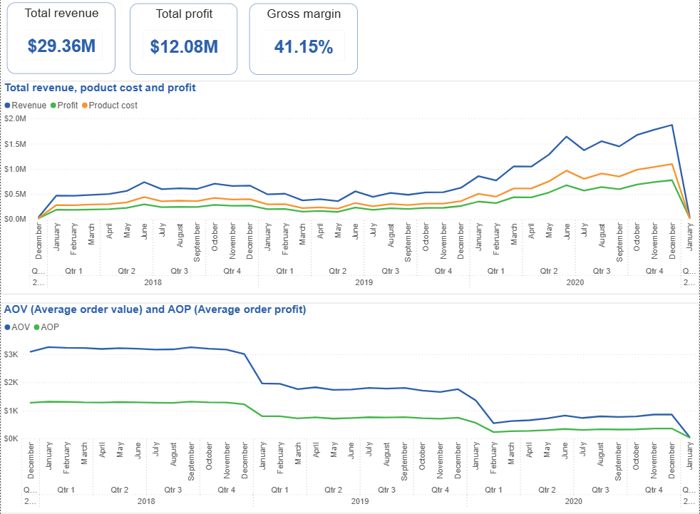
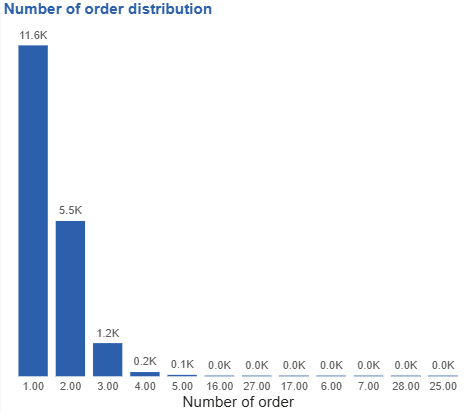
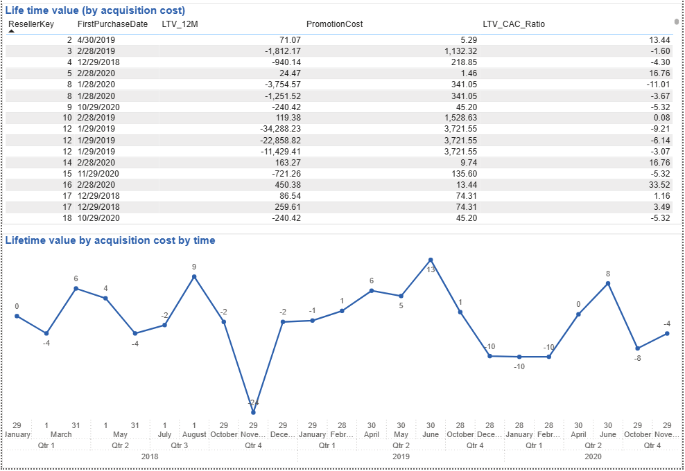
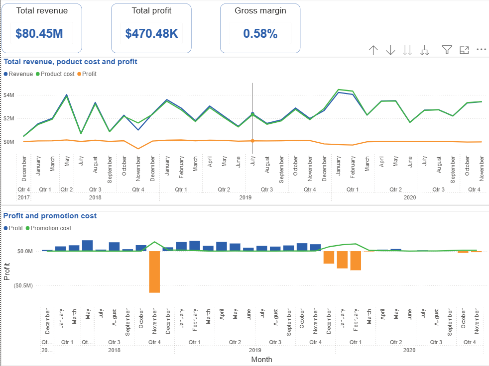
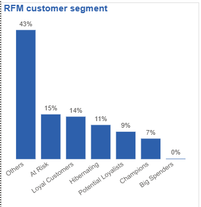
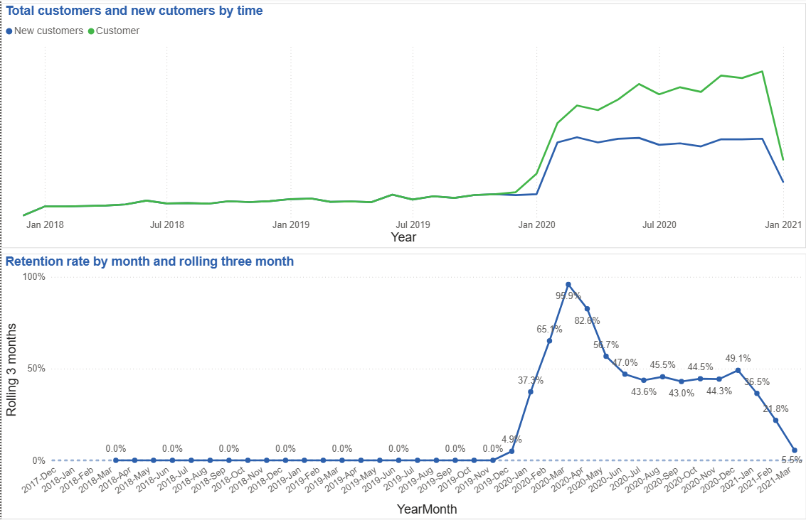
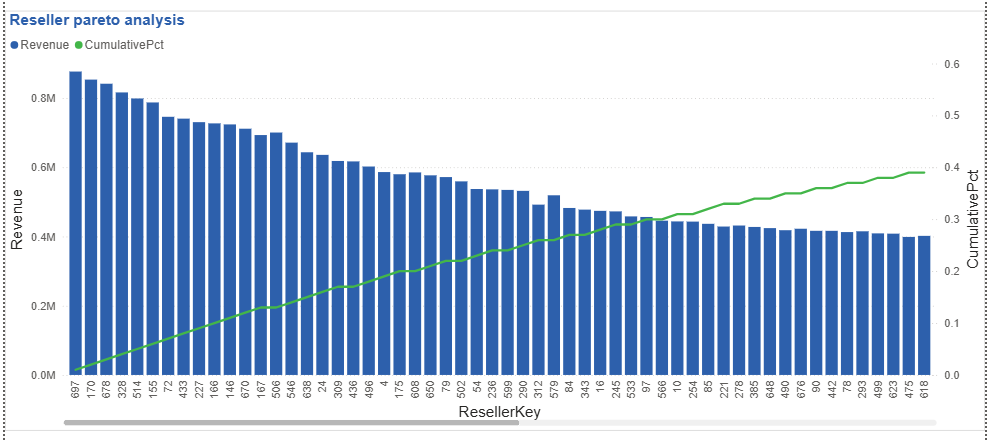
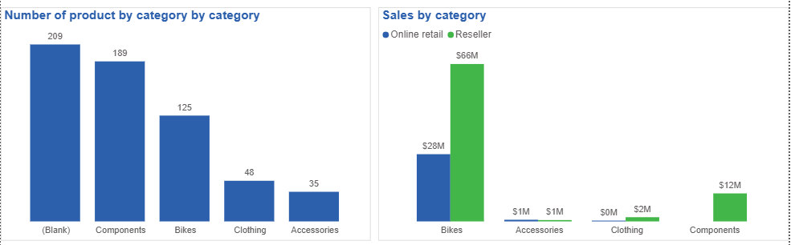
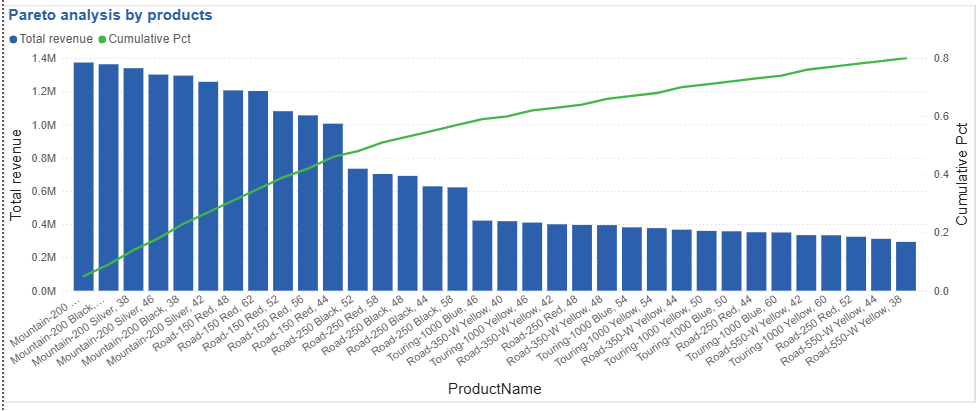

Portfolio Overview
Business Analytics & Data-driven Decision Making
1. Input (Dataset Overview)
Portfolio này sử dụng AdventureWorksDW2019, một bộ dữ liệu mô phỏng hoạt động kinh doanh thực tế của doanh nghiệp bán xe đạp và phụ kiện, bao gồm cả kênh bán lẻ trực tuyến (B2C) và kênh bán sỉ qua đại lý (B2B – Reseller).
Dữ liệu ghi nhận hàng trăm nghìn giao dịch trong nhiều năm, phản ánh đầy đủ vòng đời bán hàng và hành vi khách hàng. Cụ thể, dữ liệu bao gồm:
- Thông tin đơn hàng: ngày đặt hàng, số lượng, doanh thu, chi phí, lợi nhuận, khuyến mãi, thuế và phí vận chuyển.
- Thông tin sản phẩm: tên sản phẩm, danh mục, giá bán, chi phí chuẩn và các thuộc tính sản phẩm.
-
Thông tin khách hàng:
- Khách hàng bán lẻ (Internet customers).
- Khách hàng đại lý (Resellers), bao gồm tần suất đặt hàng và hành vi mua lặp lại.
- Thông tin kênh bán hàng: phân tách rõ giữa Internet Sales và Reseller Sales, cho phép so sánh chiến lược B2C và B2B.
Bộ dữ liệu này phù hợp để phân tích hiệu quả kinh doanh, hành vi khách hàng, hiệu quả khuyến mãi và chiến lược tăng trưởng dài hạn.
2. Analysis Objectives (Business Questions)
Portfolio tập trung trả lời các câu hỏi kinh doanh trọng tâm sau:
-
Hiệu quả bán hàng
- Doanh thu, lợi nhuận và cơ cấu doanh thu theo kênh (Online vs Reseller).
- Doanh thu có đang phụ thuộc quá nhiều vào một nhóm sản phẩm cốt lõi hay không?
-
Chiến lược sản phẩm & Cross-sell
- Hành vi mua đơn lẻ so với mua kèm (basket analysis).
- Các cặp sản phẩm thường được mua cùng nhau.
- Cơ hội cross-sell và upsell theo từng kênh bán hàng.
-
Khách hàng & Vòng đời
- Tăng trưởng khách hàng mới theo thời gian.
- Retention, churn và hành vi mua lặp lại của khách hàng B2C và B2B.
- Phân khúc khách hàng theo RFM và lifecycle (New – Active – At Risk – Churn).
-
Khuyến mãi & Lợi nhuận
- Khuyến mãi có thực sự giúp thu hút khách hàng mới hay không?
- Chi phí khuyến mãi có thể xem như chi phí thu hút khách hàng (CAC)?
- Đánh giá hiệu quả khuyến mãi thông qua LTV, CAC và LTV/CAC ratio.
-
Góc nhìn quản trị
- Doanh nghiệp đang tăng trưởng bền vững hay đánh đổi lợi nhuận ngắn hạn?
- Những hành động kinh doanh nào nên được ưu tiên để tối ưu doanh thu và lợi nhuận?
3. Process (Workflow)
Quy trình phân tích được thực hiện theo các bước sau:
-
Data Sampling & Understanding
Khám phá cấu trúc dữ liệu, schema và mối quan hệ giữa các bảng fact và dimension. -
Data Preparation in SQL Server
- Trích xuất dữ liệu từ các bảng chính: FactInternetSales, FactResellerSales, DimProduct, DimCustomer, DimReseller, DimDate.
- Thực hiện các phép tính nghiệp vụ: revenue, profit, promotion cost, basket pairs và cohort.
-
Data Modeling & Visualization in Power BI
- Xây dựng mô hình dữ liệu (star schema).
- Tạo các measure DAX cho KPI, rolling metrics, retention, LTV và benchmark nội bộ.
- Thiết kế dashboard phục vụ phân tích và ra quyết định.
-
Analysis & Insight Generation
Phân tích dữ liệu từ nhiều góc độ: sales, product, customer và promotion, chuyển đổi số liệu thành insight có hành động cụ thể. -
Reporting & Business Recommendations
Trình bày kết quả bằng dashboard và narrative, đề xuất các hành động kinh doanh dựa trên dữ liệu.
4. Insight chính
Sales B2C
- Tăng trưởng hiện tại dựa vào volume thay vì giá trị, làm suy giảm AOV và lợi nhuận trên mỗi đơn.
- Lần mua thứ hai là điểm then chốt quyết định khả năng upgrade AOV và LTV của khách hàng.
- Chất lượng khách hàng mới đang giảm theo thời gian, đòi hỏi chiến lược retention sớm và dẫn dắt hành vi mua.
Sales B2B
- Biên lợi nhuận thấp và profit âm phản ánh chiến lược hy sinh lợi ích ngắn hạn, nhưng hiệu quả dài hạn không ổn định.
- Chỉ một phần reseller được acquire bằng promotion mang lại ROI tích cực, cho thấy cần chọn lọc thay vì mở rộng đại trà.
- Tăng trưởng bền vững B2B phụ thuộc vào tối ưu giá trị mỗi reseller, không phải số lượng reseller.
Customer Online (B2C)
- Base khách hàng lớn nhưng cấu trúc phân khúc mất cân đối, với tỷ trọng cao các nhóm có nguy cơ churn.
- Hành vi mua bundle là chỉ báo mạnh nhất cho retention và giá trị vòng đời trong ngành phụ kiện xe đạp.
- Retention chỉ cải thiện khi có thay đổi chiến lược hoặc bối cảnh, khẳng định retention là kết quả của thiết kế kinh doanh.
Reseller (B2B)
- Tái phân bổ nguồn lực theo Pareto: ưu tiên chăm sóc, điều khoản thương mại và hỗ trợ bán hàng cho nhóm reseller top contributor; kiểm soát chi phí với nhóm đóng góp thấp.
- Áp dụng phân loại Active – At Risk – Churn dựa trên Order Frequency và ngày mua gần nhất để quản trị churn sát với thực tế kinh doanh của từng loại reseller.
- Tập trung upsell và bundle cho nhóm Active nhằm tối đa hóa giá trị mỗi reseller và theo dõi % Active như chỉ số sức khỏe của base B2B.
- Thực hiện sales outreach sớm cho nhóm At Risk (check-in, hỗ trợ tồn kho, điều chỉnh điều khoản) để chặn churn trước khi xảy ra.
- Áp dụng tư duy stop cost với nhóm Churned, hạn chế ưu đãi và theo dõi hard churn rate để kiểm soát base erosion dài hạn.
Product
- Quản trị danh mục sản phẩm chưa tốt làm hạn chế khả năng phân tích, merchandising và scale doanh thu.
- Doanh thu phụ thuộc lớn vào một nhóm nhỏ sản phẩm, tiềm ẩn rủi ro dài hạn nếu không làm mới danh mục.
- Quyết định bundle và cross-sell cần dựa trên lift, confidence và support đồng thời, tránh đẩy bán các mối quan hệ có quy mô nhỏ.
Nội dung phân tích (Dummy data – Brand giả định)
Sales B2C – Tăng trưởng bằng số lượng, chưa bằng giá trị
Doanh thu tăng nhưng chất lượng đơn hàng và giá trị khách hàng chưa theo kịp, tiềm ẩn rủi ro dài hạn.Trong kênh bán lẻ B2C, các chỉ số cốt lõi được theo dõi gồm revenue, profit và gross margin, với biên lợi nhuận gộp duy trì quanh mức 50%, phản ánh mô hình kinh doanh vẫn đang kiểm soát tốt chi phí sản phẩm. Tuy nhiên, khi đi sâu vào chất lượng tăng trưởng, có thể thấy một xu hướng đáng lưu ý: doanh thu và lợi nhuận tổng thể đều tăng chủ yếu nhờ số lượng đơn hàng tăng, trong khi giá trị trung bình mỗi đơn (AOV) và lợi nhuận trên mỗi đơn lại giảm.

Điều này cho thấy tăng trưởng hiện tại mang tính:
- Chỉ mở rộng chiều “số lượng giao dịch”
- Chất lượng đơn hàng và giá trị khách hàng đang suy giảm
Phân tích vòng đời mua hàng cho thấy phần lớn khách hàng chỉ phát sinh tối đa 1–3 lần mua, rất ít khách hàng đi xa hơn mốc lần mua thứ 4.

Khi chia vòng đời khách hàng thành bốn giai đoạn (lần mua thứ 1, thứ 2, thứ 3 và từ lần thứ 4 trở đi), có thể quan sát rõ hành vi upgrade AOV. Từ lần mua thứ 1 sang lần thứ 2, khách hàng mất thời gian rất dài để quay lại mua hàng tiếp theo, đồng thời giá trị đơn hàng giảm mạnh, cho thấy đơn mua đầu tiên mang tính thử nghiệm, thăm dò và khách hàng chưa sẵn sàng chi tiêu lớn. Ngược lại, từ lần mua thứ 2 sang lần thứ 3 và các lần tiếp theo, thời gian giữa các lần mua ngắn hơn đáng kể và AOV bắt đầu cải thiện, cho thấy khi khách hàng đã vượt qua rào cản niềm tin ban đầu, họ sẵn sàng chi tiêu nhiều hơn và hành vi mua trở nên ổn định hơn.

Kết hợp với xu hướng theo thời gian, giá trị trung bình của đơn mua đầu tiên đang giảm dần qua các năm, phản ánh chất lượng khách hàng mới suy giảm hoặc mức độ sẵn sàng chi tiêu ban đầu thấp hơn trong bối cảnh thị trường và hành vi tiêu dùng thay đổi.
Trong khi đó, nhóm khách hàng từ lần mua thứ 2 trở đi vẫn duy trì hoặc gia tăng mức chi tiêu, củng cố kết luận rằng vấn đề cốt lõi của B2C không nằm ở nhóm khách hàng trung thành, mà nằm ở khả năng chuyển đổi khách hàng mới sang giai đoạn mua lặp lại.
Về mặt kinh doanh, insight này cho thấy ưu tiên chiến lược không nên chỉ tập trung vào acquisition để tăng số đơn, mà cần tập trung mạnh vào việc rút ngắn thời gian từ đơn mua đầu tiên sang đơn thứ hai và gia tăng giá trị đơn ở giai đoạn này.
Các hành động phù hợp bao gồm thiết kế chiến lược post-first-purchase rõ ràng như ưu đãi có điều kiện cho lần mua thứ hai, bundle sản phẩm bổ trợ để khuyến khích tăng AOV sớm, cá nhân hóa gợi ý sản phẩm dựa trên đơn mua đầu tiên, cũng như xây dựng các cơ chế tạo niềm tin nhanh như chính sách đổi trả, bảo hành, social proof hoặc nội dung hướng dẫn sử dụng sau mua.
Mục tiêu kinh doanh cần được đặt rõ là “đẩy khách hàng vượt qua mốc lần mua thứ 2”, vì đây là điểm bẻ gãy quan trọng quyết định giá trị vòng đời khách hàng. Đơn mua đầu tiên nên được xem là bước xây dựng niềm tin hơn là tối đa hóa lợi nhuận, trong khi các chiến lược upsell và cross-sell chỉ nên được triển khai mạnh từ đơn thứ 2 trở đi, khi khách hàng đã có trải nghiệm thực tế với sản phẩm.
Ngoài ra, cần chủ động rút ngắn thời gian giữa các lần mua thông qua nhắc mua lại, gợi ý sản phẩm tiêu hao, hoặc các chương trình loyalty giai đoạn sớm, thay vì chờ khách hàng tự quay lại.
Sales B2B – Cốt lõi doanh thu nhưng đang bào mòn lợi nhuận
Kênh B2B đóng vai trò quan trọng về quy mô nhưng chiến lược giá và promotion đang làm suy yếu hiệu quả tài chính.Kênh B2B ghi nhận biên lợi nhuận rất thấp, chỉ khoảng 0,58%, thậm chí phần lớn đơn hàng đang ở trạng thái lỗ. Phân tích theo thời gian cho thấy các giai đoạn profit âm trùng khớp với những tháng có promotion cost cao, phản ánh việc doanh nghiệp đang chủ động hy sinh lợi nhuận ngắn hạn để đạt một mục tiêu chiến lược khác. Trong bối cảnh B2B, việc bán lỗ một số sản phẩm hoặc đơn hàng không nhất thiết là tín hiệu xấu, nếu chiến lược giá này phục vụ các mục tiêu dài hạn như thu hút reseller mới, tạo đòn bẩy cho cross-sell hoặc up-sell các sản phẩm có biên lợi nhuận cao hơn, hoặc khóa chặt mối quan hệ hợp tác dài hạn với khách hàng.

Để phân biệt giữa “hy sinh có chủ đích” và “chiến lược giá có vấn đề”, phân tích được thiết kế xoay quanh hiệu quả dài hạn của các reseller được acquire trong giai đoạn khuyến mãi. Cụ thể:
- Các reseller có đơn mua đầu tiên rơi vào thời gian promotion được theo dõi giá trị vòng đời trong 12 tháng tiếp theo
- So sánh LTV 12 tháng với chi phí khuyến mãi đã bỏ ra.
- Tỷ lệ LTV12M/PromotionCost được sử dụng như một chỉ số ROI, với ngưỡng lớn hơn 3 được xem là mang lại giá trị kinh tế tích cực cho doanh nghiệp.
Kết quả cho thấy ROI theo tháng biến động rất mạnh, có những thời điểm đạt mức rất cao nhưng cũng có nhiều tháng ROI âm sâu, đặc biệt từ sau năm 2019 trở đi, phản ánh hiệu quả acquire reseller bằng promotion ngày càng kém ổn định.
Từ góc nhìn quản lý, kết quả này hàm ý rằng chiến lược khuyến mãi trong B2B đang thiếu tính chọn lọc và chưa được kiểm soát chặt chẽ theo chất lượng reseller. Việc một số tháng tạo ra reseller có ROI rất cao cho thấy mô hình này vẫn có thể hiệu quả nếu được triển khai đúng cách, nhưng sự suy giảm ROI trung bình theo thời gian cho thấy doanh nghiệp có nguy cơ đang mở rộng số lượng reseller bằng mọi giá, thay vì tối ưu giá trị dài hạn của từng mối quan hệ.
Việc ROI suy giảm từ năm 2019 cho thấy doanh nghiệp cần chuyển trọng tâm từ “acquire càng nhiều reseller càng tốt” sang “acquire đúng reseller”. Các hành động tiếp theo có thể bao gồm:
- Phân khúc reseller dựa trên ROI và hành vi mua để xác định nhóm mang lại giá trị cao
- Điều chỉnh chính sách promotion theo từng phân khúc thay vì áp dụng đại trà
- Tái thiết kế danh mục sản phẩm dùng để làm “loss leader” nhằm đảm bảo khả năng cross-sell hoặc up-sell thực sự tồn tại.
- Cần theo dõi sát các reseller có ROI thấp để đánh giá nguy cơ churn, từ đó quyết định nên tiếp tục đầu tư nuôi dưỡng, tái đàm phán điều khoản thương mại, hay chủ động loại bỏ những mối quan hệ không mang lại giá trị dài hạn cho doanh nghiệp.
Customer Online (B2C) – Đông khách nhưng thiếu gắn bó
Base khách hàng lớn nhưng tỷ lệ khách hàng giá trị cao thấp, retention chưa trở thành động lực tăng trưởng.Trong kênh B2C online, tổng số khách hàng khoảng 18.000 và được phân khúc bằng mô hình RFM theo tứ phân vị, tập trung vào việc gom các tổ hợp hành vi tương đồng thành một số nhóm có thể hành động được, thay vì gán nhãn toàn bộ 64 tổ hợp RFM. Cách tiếp cận này đảm bảo mỗi phân khúc đều gắn trực tiếp với một định hướng kinh doanh cụ thể, tránh phân tích mang tính mô tả thuần túy.

Kết quả phân loại cho thấy cơ cấu khách hàng đang mất cân đối: nhóm Others, At Risk và Hibernating chiếm hơn 50% tổng base, trong khi các nhóm tạo giá trị cao như Potential Loyalists, Champions và Big Spenders lại chiếm tỷ trọng rất nhỏ. Điều này phản ánh chất lượng khách hàng B2C chưa tốt, base khách hàng lớn nhưng thiếu chiều sâu, và phần lớn khách hàng chưa được dẫn dắt vào hành trình mua lặp lại hoặc nâng cấp giá trị.
Phân tích retention rate theo rolling three months cho thấy trước năm 2020, gần như không có khách hàng quay lại, và chỉ từ đầu năm 2020 trở đi retention mới bắt đầu tăng mạnh. Điều này có thể phản ánh sự thay đổi mang tính cấu trúc trong mô hình kinh doanh, sản phẩm hoặc hành vi thị trường, chẳng hạn như danh mục sản phẩm phù hợp hơn với nhu cầu lặp lại, trải nghiệm mua hàng được cải thiện, hoặc thị trường bước vào giai đoạn nhu cầu tăng cao.
Việc sử dụng rolling three months là phù hợp trong ngành phụ kiện xe đạp vì đây không phải FMCG, hành vi mua mang tính mùa vụ và khách hàng không mua đều hàng tháng; rolling window giúp làm mượt dữ liệu và loại bỏ nhiễu do seasonality ngắn hạn.

Mùa đạp xe tại Mỹ thường rơi vào giai đoạn từ mùa xuân đến mùa hè, cao điểm từ khoảng tháng 4 đến tháng 9, khi thời tiết thuận lợi cho hoạt động ngoài trời. Điều này giải thích vì sao việc đánh giá retention theo từng tháng riêng lẻ sẽ gây hiểu sai, và rolling three months phản ánh tốt hơn hành vi quay lại thực sự của khách hàng. Cách tính retention này không phù hợp với B2B vì B2B mua theo dự án, hợp đồng hoặc chu kỳ không đều, việc không mua trong 1–2 tháng không đồng nghĩa với churn.
Reseller - Nhóm khách hàng Active chiếm tỷ trọng cao nhưng cần quản lý tốt nhóm khách hàng có nguy cơ rời bỏ
Cần nuôi dưỡng vòng đời khách resellersPhân tích Pareto cho thấy một nhóm nhỏ reseller đóng góp khoảng 80% doanh thu, phản ánh cấu trúc khách hàng B2B mang tính tập trung cao. Về mặt hành động, insight này không chỉ dùng để “nhận diện khách hàng lớn”, mà cần dẫn đến việc tái phân bổ nguồn lực: ưu tiên chăm sóc, dịch vụ, điều khoản thương mại và hỗ trợ bán hàng cho nhóm top contributor; đồng thời kiểm soát chi phí và mức độ đầu tư đối với nhóm đóng góp thấp để tránh làm xói mòn lợi nhuận.

Dựa trên thông tin định tính về OrderFrequency trong bảng reseller (Annual, Quarterly, Semi-annual/Sporadic) kết hợp với ngày mua hàng cuối cùng trong dữ liệu fact, reseller được phân loại thành Active, At Risk và Churned.
| Order Frequency (DimReseller) | Ý nghĩa | At Risk | Churn |
|---|---|---|---|
| A – Annual | Hằng năm | 90 – 120 ngày | > 120 ngày |
| Q – Quarterly | Hằng quý | 120 – 180 ngày | > 180 ngày |
| S – Semi-annual / Sporadic | Thường xuyên | 180 – 270 ngày | > 270 ngày |
Kết quả sau khi phân nhóm:
| Churn status | Number of resellers |
|---|---|
| Active | 455 |
| Churned | 164 |
| At Risk | 16 |
Kết quả cho thấy phần lớn reseller vẫn đang ở trạng thái Active, nhưng đã xuất hiện một nhóm Churned tương đối lớn và một nhóm nhỏ At Risk đóng vai trò cảnh báo sớm.
| Segment | Business action | Chỉ số cần theo dõi | Ý nghĩa |
|---|---|---|---|
| Active | Upsell, bundle | % Active | Health base |
| At risk | Sales outreach | Soft churn growth | Early warning |
| Churn | Stop cost | Hard churn | Base erosion |
- Với nhóm Active, trọng tâm là tối đa hóa giá trị thông qua upsell, bundle và mở rộng danh mục, đồng thời theo dõi tỷ lệ % Active như một chỉ số sức khỏe của base khách hàng.
- Nhóm At Risk cần được sales outreach kịp thời, tức là các hoạt động chủ động từ đội sales như gọi điện, check-in, hỏi thăm kế hoạch mua sắp tới, hỗ trợ tồn kho hoặc điều chỉnh điều khoản thương mại nhằm ngăn chặn churn trước khi xảy ra. Soft churn growth có thể được hiểu là tỷ lệ tăng của nhóm At Risk theo thời gian, đóng vai trò chỉ báo sớm cho sự suy yếu của base.
- Nhóm Churned cần được xem xét theo hướng stop cost, hạn chế tiếp tục đầu tư hoặc ưu đãi, và theo dõi hard churn rate, tức tỷ lệ reseller rơi vào trạng thái churn thực sự trong một giai đoạn nhất định. Base erosion phản ánh mức độ thu hẹp của base khách hàng hoạt động, không chỉ về số lượng mà còn về giá trị đóng góp, là tín hiệu quan trọng cho rủi ro dài hạn của kênh B2B.
Product – Danh mục rộng nhưng chưa được khai thác chiến lược
Sản phẩm nhiều, có insight hành vi mua, nhưng quản trị danh mục và bundle chưa được tối ưu để scale doanh thu.Danh mục sản phẩm gồm 606 SKU, trong đó có tới 209 sản phẩm chưa được gán category, đây là một vấn đề dữ liệu nhưng đồng thời cũng là vấn đề kinh doanh. Việc thiếu category làm giảm khả năng phân tích hiệu quả danh mục, gây khó khăn cho merchandising, bundle, cross-sell và tối ưu trải nghiệm tìm kiếm. Ở góc độ quản lý, nhóm sản phẩm này cần được rà soát lại để xác định rõ vai trò: sản phẩm ngừng bán, sản phẩm phụ trợ ít quan trọng hay đơn giản là thiếu chuẩn hóa dữ liệu, vì mỗi trường hợp sẽ dẫn đến một quyết định kinh doanh khác nhau.

Thêm vào đó, Bikes đang chiếm tỷ trọng doanh thu cao ở cả hai kênh. Điều này có ưu và nhược điểm sau
| Ưu điểm | Nhược điểm | Cách giải quyết |
|---|---|---|
|
|
|
Chart sau đây thể hiện list sản phẩm chiếm 80% doanh thu, giúp doanh nghiệp xác định nhóm sản phẩm chủ lực.

Phân tích basket giúp làm rõ những sản phẩm nào thường được mua cùng nhau, từ đó hỗ trợ quyết định bundle, cross-sell và thiết kế trải nghiệm mua hàng. Ba chỉ số support, confidence và lift đóng vai trò bổ trợ lẫn nhau trong việc đánh giá giá trị kinh doanh của các cặp sản phẩm.
- Support phản ánh quy mô thực tế của hành vi mua
- Confidence phản ánh xác suất mua kèm có điều kiện
- Lft phản ánh mức độ mua kèm vượt kỳ vọng so với hành vi ngẫu nhiên, là chỉ số giúp tránh nhầm lẫn giữa mối quan hệ thực sự và việc hai sản phẩm cùng bán chạy một cách độc lập
| Product A | Product B | Lift | Lift rank (desc) | Confidence | Confidence rank | Support | Support rank |
|---|---|---|---|---|---|---|---|
| Touring Tire | Touring Tire Tube | 16.1 | 1 | 0.500 | 1 | 0.0292 | 4 |
| Mountain-400-W Silver, 40 | Women's Mountain Shorts, L | 11.9 | 2 | 0.042 | 79 | 0.0007 | 506 |
| Mountain-400-W Silver, 40 | Women's Mountain Shorts, S | 10.0 | 3 | 0.033 | 112 | 0.0005 | 667 |
| Mountain-400-W Silver, 46 | Women's Mountain Shorts, M | 9.7 | 4 | 0.036 | 97 | 0.0006 | 577 |
| Mountain-400-W Silver, 42 | Women's Mountain Shorts, L | 9.5 | 5 | 0.034 | 110 | 0.0006 | 610 |
| Mountain-400-W Silver, 42 | Women's Mountain Shorts, M | 9.1 | 6 | 0.032 | 118 | 0.0005 | 637 |
| Mountain-400-W Silver, 38 | Women's Mountain Shorts, M | 9.0 | 7 | 0.035 | 100 | 0.0006 | 577 |
| Mountain-400-W Silver, 38 | Women's Mountain Shorts, L | 8.2 | 8 | 0.032 | 117 | 0.0006 | 610 |
| HL Road Tire | Road Tire Tube | 8.1 | 9 | 0.226 | 5 | 0.0215 | 9 |
| Classic Vest, S | Mountain-500 Black, 52 | 8.0 | 10 | 0.010 | 720 | 0.0001 | 1538 |
| Mountain-400-W Silver, 38 | Women's Mountain Shorts, S | 8.0 | 11 | 0.030 | 133 | 0.0005 | 708 |
| Mountain-400-W Silver, 46 | Women's Mountain Shorts, S | 7.9 | 12 | 0.028 | 145 | 0.0004 | 751 |
| LL Mountain Tire | Mountain-500 Black, 42 | 7.9 | 13 | 0.013 | 450 | 0.0004 | 751 |
| LL Mountain Tire | Mountain-500 Black, 52 | 7.8 | 14 | 0.011 | 586 | 0.0004 | 848 |
| Mountain-400-W Silver, 46 | Women's Mountain Shorts, L | 7.7 | 15 | 0.029 | 141 | 0.0005 | 667 |
| ML Road Tire | Road Tire Tube | 7.6 | 16 | 0.225 | 6 | 0.0219 | 8 |
| LL Mountain Tire | Mountain-500 Silver, 44 | 7.4 | 17 | 0.010 | 682 | 0.0003 | 906 |
| ML Road Tire | Road-350-W Yellow, 44 | 7.2 | 18 | 0.048 | 60 | 0.0019 | 201 |
| LL Mountain Tire | Mountain-500 Silver, 40 | 7.1 | 19 | 0.011 | 590 | 0.0004 | 848 |
| Mountain-500 Silver, 52 | Short-Sleeve Classic Jersey, M | 7.1 | 20 | 0.011 | 593 | 0.0002 | 1195 |
Nhìn vào danh sách các cặp sản phẩm có lift cao nhất, có thể thấy rõ hai nhóm hành vi chính.
- Nhóm thứ nhất là các cặp mang tính “bắt buộc về mặt chức năng”, điển hình như Tire và Tire Tube, có lift và confidence cao đồng thời support cũng ở mức đủ lớn. Đây là những bundle tự nhiên, phản ánh nhu cầu sử dụng hoàn chỉnh, rất phù hợp để triển khai bundle cố định, gợi ý mua kèm mặc định và tối ưu checkout nhằm giảm rào cản mua hàng.
- Nhóm thứ hai là các cặp có lift rất cao nhưng support và confidence thấp, thường gắn với các biến thể size, màu hoặc các sản phẩm ít phổ biến hơn. Những cặp này cho thấy mối quan hệ hành vi mạnh trong một phân khúc rất hẹp, nhưng không đủ quy mô để trở thành bundle đại trà.
Từ góc nhìn kinh doanh, hoàn toàn có thể phân loại sản phẩm và cặp sản phẩm dựa trên ba chỉ số này.
- Nhóm có lift cao nhưng support thấp nên được xem là “niche association”, phù hợp cho gợi ý cá nhân hóa theo ngữ cảnh hoặc theo segment khách hàng, thay vì triển khai đại trà.
- Nhóm có confidence cao nhưng lift gần 1 thường phản ánh sản phẩm bán chạy tự thân, việc gộp bundle cần được cân nhắc kỹ để tránh hiểu nhầm mối quan hệ nhân quả.
- Nhóm có lift thấp hoặc nhỏ hơn 1 nên tránh bundle vì có nguy cơ làm giảm hiệu quả bán hàng.
Key Takeaways for Business
Sales B2C
- Tăng trưởng hiện tại dựa vào volume thay vì giá trị, làm suy giảm AOV và lợi nhuận trên mỗi đơn.
- Lần mua thứ hai là điểm then chốt quyết định khả năng upgrade AOV và LTV của khách hàng.
- Chất lượng khách hàng mới đang giảm theo thời gian, đòi hỏi chiến lược retention sớm và dẫn dắt hành vi mua.
Sales B2B
- Biên lợi nhuận thấp và profit âm phản ánh chiến lược hy sinh lợi ích ngắn hạn, nhưng hiệu quả dài hạn không ổn định.
- Chỉ một phần reseller được acquire bằng promotion mang lại ROI tích cực, cho thấy cần chọn lọc thay vì mở rộng đại trà.
- Tăng trưởng bền vững B2B phụ thuộc vào tối ưu giá trị mỗi reseller, không phải số lượng reseller.
Customer Online (B2C)
- Base khách hàng lớn nhưng cấu trúc phân khúc mất cân đối, với tỷ trọng cao các nhóm có nguy cơ churn.
- Hành vi mua bundle là chỉ báo mạnh nhất cho retention và giá trị vòng đời trong ngành phụ kiện xe đạp.
- Retention chỉ cải thiện khi có thay đổi chiến lược hoặc bối cảnh, khẳng định retention là kết quả của thiết kế kinh doanh.
Reseller (B2B)
- Tái phân bổ nguồn lực theo Pareto: ưu tiên chăm sóc, điều khoản thương mại và hỗ trợ bán hàng cho nhóm reseller top contributor; kiểm soát chi phí với nhóm đóng góp thấp.
- Áp dụng phân loại Active – At Risk – Churn dựa trên Order Frequency và ngày mua gần nhất để quản trị churn sát với thực tế kinh doanh của từng loại reseller.
- Tập trung upsell và bundle cho nhóm Active nhằm tối đa hóa giá trị mỗi reseller và theo dõi % Active như chỉ số sức khỏe của base B2B.
- Thực hiện sales outreach sớm cho nhóm At Risk (check-in, hỗ trợ tồn kho, điều chỉnh điều khoản) để chặn churn trước khi xảy ra.
- Áp dụng tư duy stop cost với nhóm Churned, hạn chế ưu đãi và theo dõi hard churn rate để kiểm soát base erosion dài hạn.
Product
- Quản trị danh mục sản phẩm chưa tốt làm hạn chế khả năng phân tích, merchandising và scale doanh thu.
- Doanh thu phụ thuộc lớn vào một nhóm nhỏ sản phẩm, tiềm ẩn rủi ro dài hạn nếu không làm mới danh mục.
- Quyết định bundle và cross-sell cần dựa trên lift, confidence và support đồng thời, tránh đẩy bán các mối quan hệ có quy mô nhỏ.